Deployment is hard!
Excellent for businesses, or apps with light to moderate traffic.
But expensive for hobbyists or freelancers with potentially high traffic.
Some different approaches:
“Their” reasoning:
My response: “Well, actually…”
Some fairly basic computing capabilities are just not available in the browser!
wasm doesn’t change these limitations, it just makes them hurt more.
<canvas> graphics device to run on emscripten” → WebR
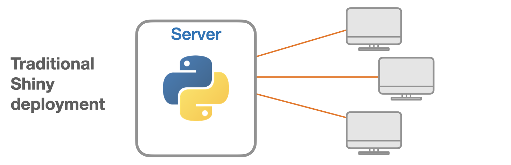
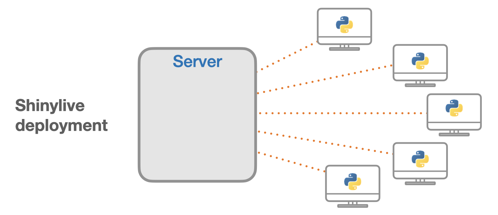
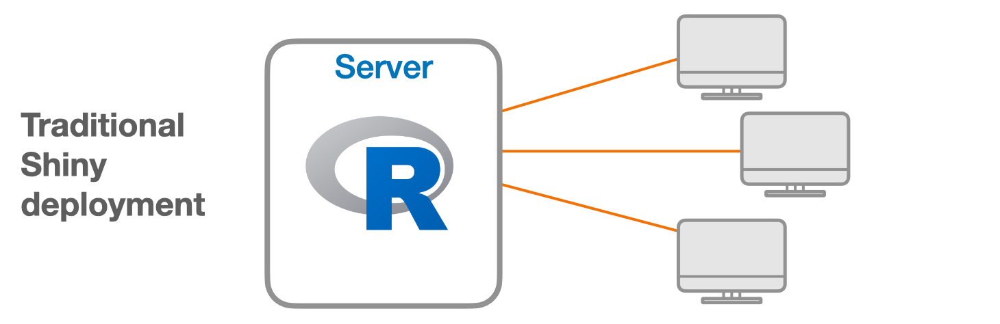
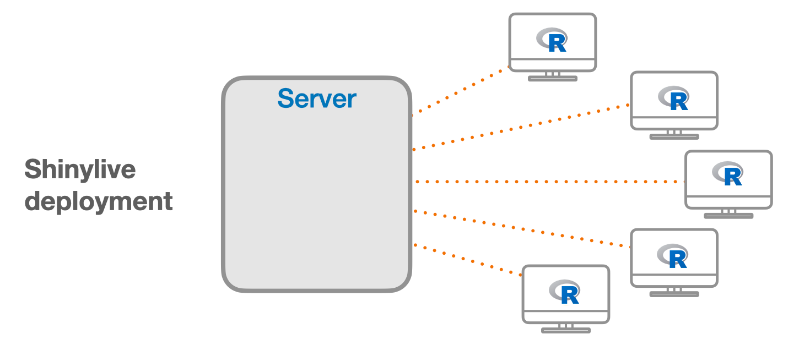
{shinylive}: Convert local Shiny app to static HTML/CSS/JS/wasm
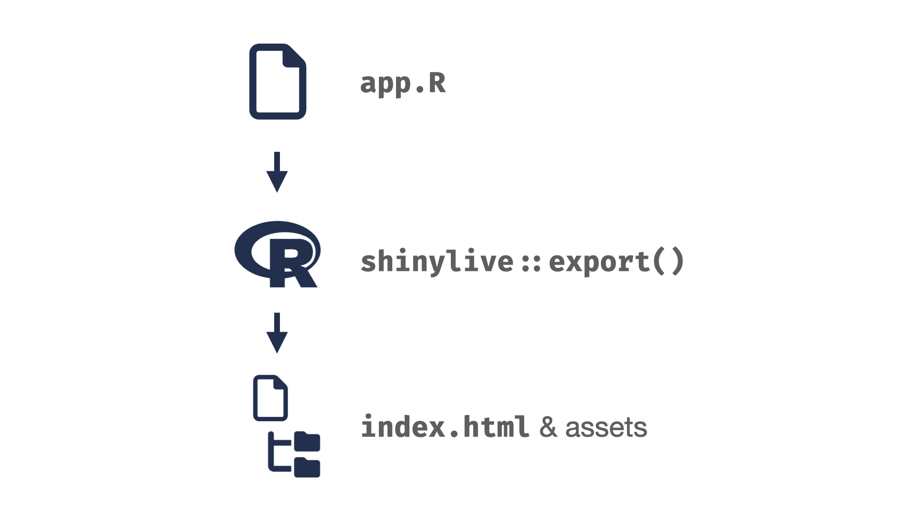 shinylive::export() -> index.html & assets" class="r-stretch">{shinylive}: Convert local Shiny app to static HTML/CSS/JS/wasm
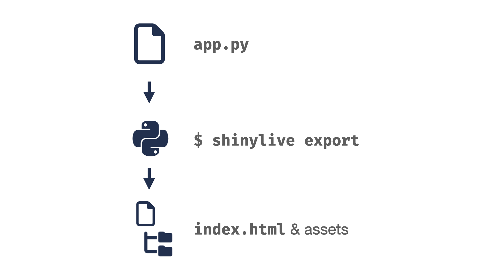 shinylive export -> index.html & assets" class="r-stretch">Caveat: For browser security reasons, you can’t just double-click index.html to run it locally. You need a real web server. Fortunately, both R and Python have one-liners to start a web server for a directory.
Shinylive.io: Write and share Shiny apps directly in the browser
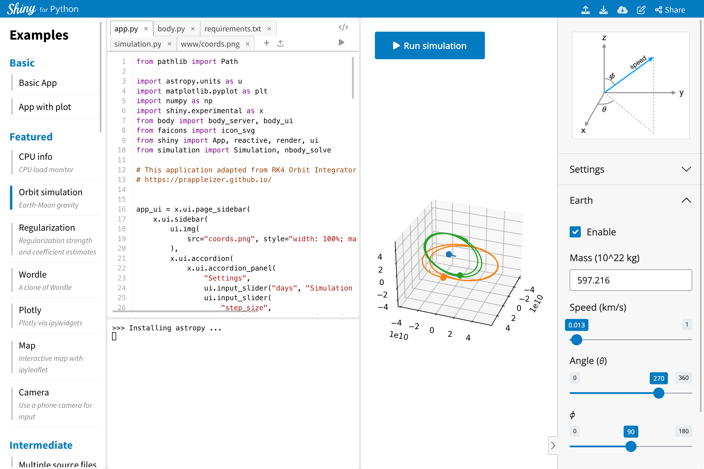
Shiny for Python:
https://shinylive.io/py/
Shiny for R:
https://shinylive.io/r/
Shinylive.io: Write and share Shiny apps directly in the browser
Shinylive Quarto extension: Static Shiny apps as Quarto code chunks
Shinylive Quarto extension: Static Shiny apps as Quarto code chunks
#| standalone: true
#| viewerHeight: 600
library(shiny)
library(bslib)
theme <- bs_theme(font_scale = 1.5)
# Define UI for app that draws a histogram ----
ui <- page_sidebar(theme = theme,
sidebar = sidebar(open = "open",
numericInput("n", "n", 20),
checkboxInput("pause", "Pause", FALSE),
),
plotOutput("plot", width=1100)
)
server <- function(input, output, session) {
data <- reactive({
input$resample
if (!isTRUE(input$pause)) {
invalidateLater(1000)
}
rnorm(input$n)
})
output$plot <- renderPlot({
hist(data(),
breaks = 40,
xlim = c(-2, 2),
lty = "blank",
xlab = "value"
)
lwd <- 8
abline(v=0, col="red", lwd=lwd, lty=2)
abline(v=mean(data()), col="blue", lwd=lwd, lty=1)
})
}
# Create Shiny app ----
shinyApp(ui = ui, server = server)Mainframe computer
Photo credit: Norsk Teknisk Museum, CC BY-SA 4.0
Minicomputer
Photo credit: Florian Schäffer, CC BY-SA 4.0, via Wikimedia Commons
IBM PC
iPhone
Photo credit: CardMapr.nl on Unsplash
AirTag on keychain
Photo credit: Eddie Pipocas on Unsplash
Shiny for Python tutorial is all shinylive
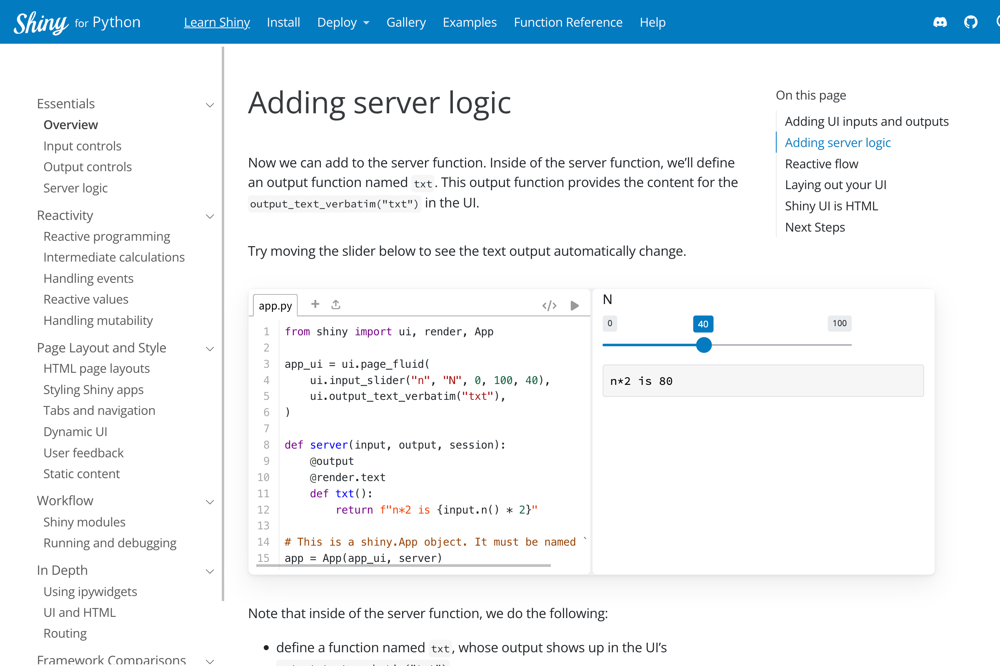Shiny for Python function reference docs embed example apps
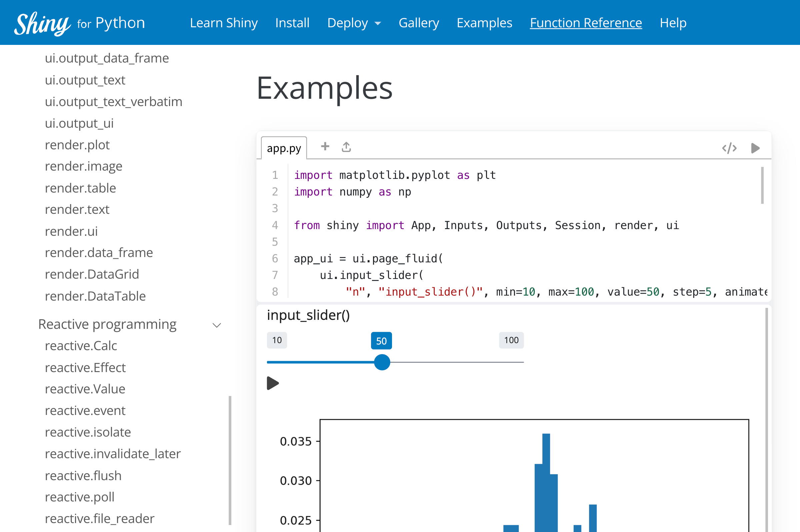pkgdown sites for R could use Shiny apps to demonstrate package functionality (hypothetically)
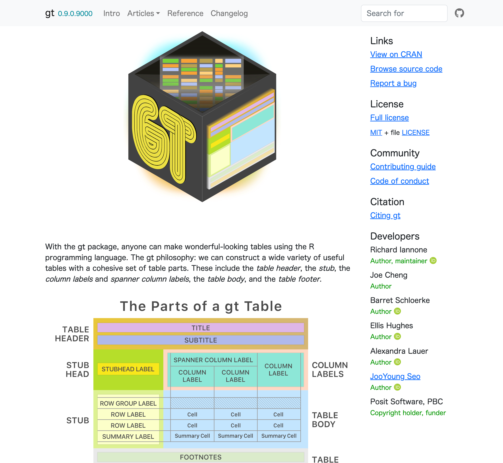 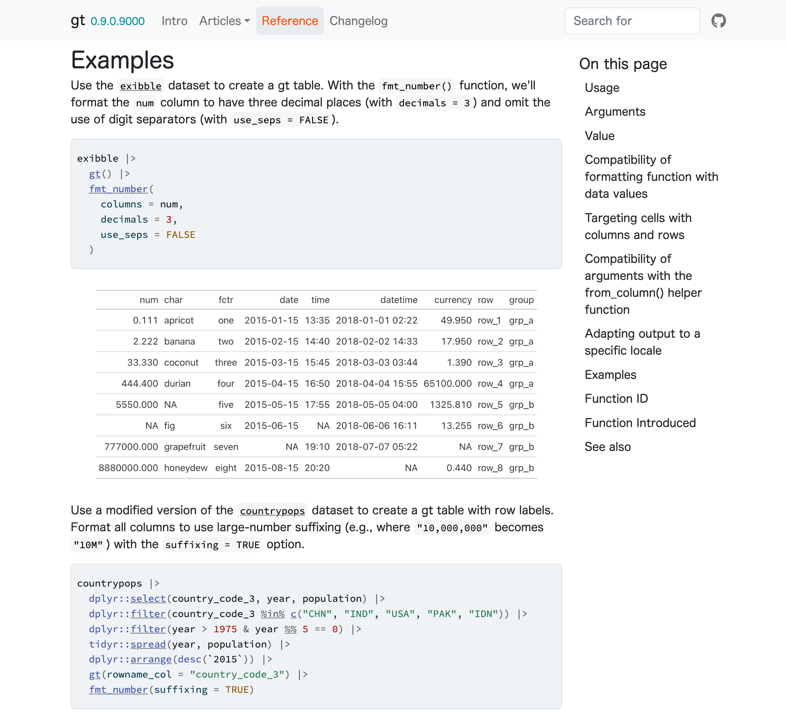
An R Consortium working group and the FDA are exploring the possibility of WebR and Shinylive as a way to include reproducible analysis and apps in clinical study reports
Your turn!
system() and {future}, Python: multiprocessing)Copy of these slides, and links to next steps:
https://bit.ly/shinylive-2023